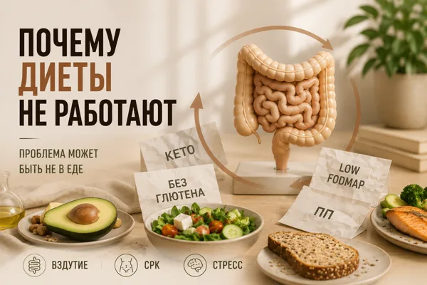
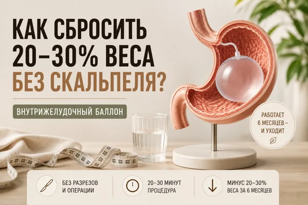
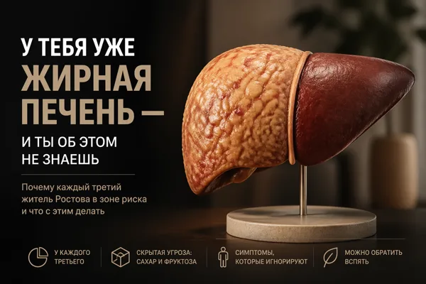

Печень, вес, жировая болезнь и диеты
Жировая болезнь печени есть у каждого второго с лишним весом. Здесь — про метаболизм, питание без голодовок и то, почему диеты не работают.

ЖКТ
Вы меняете диеты, а кишечник всё равно не лучше. Почему?
Читать →
Снижение веса
Как сбросить 20–30% веса за 6 месяцев без скальпеля?
Читать →
Снижение веса
Диеты не работают? Вы не виноваты
Читать →
Печень